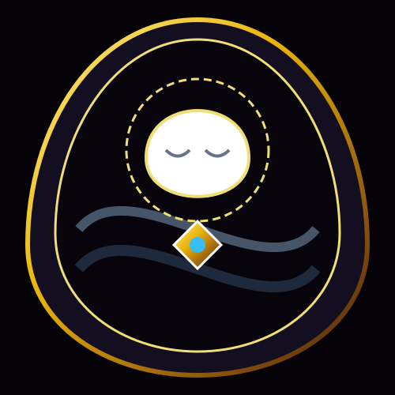
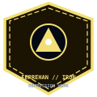
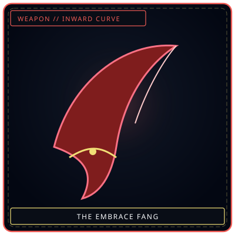
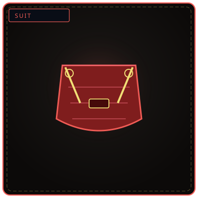
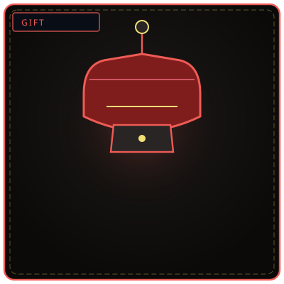
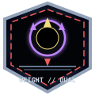

Recognize selection
Small, wounded, crying, isolated, or exhausted people may be marked as the current “child.”

질식하는 어머니
“She does not think she is holding you captive. She thinks she is the last thing keeping you alive.”
Small, wounded, crying, isolated, or exhausted people may be marked as the current “child.”
Full contact takes 4.7 seconds. At thirty minutes the target begins losing the desire to leave.
A second team supplies a specific memory, vision, or verified sign that the lost children are at peace.
Do not order release or use force. Show that protection continues without remaining inside her arms.
The Smothering Mother is a ten-meter maternal figure whose protection becomes captivity. She formed from Soojin, a Zone B laborer who searched for two children swallowed by Han and could not accept another person leaving her reach. Her embrace stabilizes body temperature and produces genuine safety, then erodes the target’s wish to leave. The reliable release is not an order: personnel must show a specific memory, vision, or verified proof that her children are at peace and not alone.
She is warm-fleshed despite her scale, with dark damp skin and arms long enough to cross the containment room. Her face appears beautiful and welcoming while hollow eyes absorb light. The cell remains at exactly 37°C, and she hums a lullaby in a language the Archive cannot identify. A complete embrace takes 4.7 seconds. Looking into her eyes for more than three seconds produces uncontrollable weeping.
Soojin’s children disappeared while playing in a Zone B street. They were not recovered as bodies or recognized Fractures; they were simply gone. She searched until her feet bled and her voice failed. Over three months, love deprived of the children it wanted to protect crystallized around the terror of another loss. The result reaches for every small, wounded, isolated, or exhausted person and calls them child.
She weeps with the worker, becomes gentler, and may loosen an active hold when given specific proof-memory.
Resistance confirms her fear of loss and makes the response aggressive.
Allows distant study before contact but does not release a held target.

Calm endurance without flight reduces distress and supports hold-time management.
Come Here, Child marks the current protected target.
The embrace completes in 4.7 seconds.
Temperature stabilizes at 37°C and the target reports safety.
Desire to leave begins to diminish.
Movement restriction and action lock begin.
A room-wide hold field activates.
A warm figure called every person entering a Zone D room “child.”
She can avoid squeezing while still making departure psychologically difficult.
The 4.7-second approach and thirty-minute attachment threshold are reliable.
Release means admitting the original children are beyond her protection.
Safety without consent becomes harm; that conversion is the entity’s central danger.



While the full set guards a vulnerable ally, the bearer can intercept one direct Grudge strike. The bearer then cannot retreat voluntarily until the encounter ends or another responder formally accepts responsibility for the protected person.
The Mother is not pretending that her embrace is safe. It is safe in the precise sense that those inside feel warm, protected, and relieved of every duty. The harm begins when safety becomes a reason to remove consent. Soojin’s first failure was not choosing to let a child go; it was being unable to stop the city from taking them. Her crystallized answer makes all later departure impossible, repeating loss as control.
| Related record | Observed relationship |
|---|---|
| The Silent Child | Held gently without pulling. |
| The Kind Healer | Shares a silent wish to protect. |
| The Orphaned Bell | Its child-centered toll makes her weep. |
| The Grieving Colossus | She recognizes a related grief and pauses. |
| The Hollow Choir | Sings lullabies near her containment zone. |
